|
|
|
|
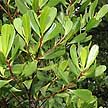
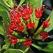
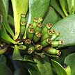
Teruntum merah
Lumnitzera littorea |
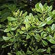
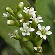
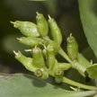
Teruntum putih
Lumnitzera racemosa |
Shrub
to small tree (5m). Leaves (10cm) leathery.
Flower (1cm) pink, star-shaped. Fruit (0.5-1cm) red berries ripening
to black. Rarely seen in the wild but commonly planted in coastal
parks. It is Endangered. |
Shrub
or small tree (2-4m) with thorny branches. Leaves (3-4cm) leathery.
Fruits oval (2cm), thin-skinned, yellow to orange with firm green
flesh. Flowers small (2-2.5cm) white hairy, in clusters. Can be common
on some of our wild shores. |
Shrub
to small tree (3m). Leaves thick succulent (15-25cm). Flowers (2cm)
distinctive 'split' petals, usually white, but sometimes with violet
stripes. Fruit small (1-1.5cm) fleshy, green ripening to white. Commonly
seen on many of our shores. |
Shrub
to tall tree (25m). Leaves spatula-shaped (2-8cm), thick and fleshy.
Flowers small (2-3cm) in dense bunches, bright red. Fruits small,
ribbed, corky and float. Bark dark, deeply fissured. Some may have
slender knee roots. Sometimes seen in the back mangroves. It is Endangered. |
Shrub
or tree (8m). Leaves spatula-shaped (2-10cm). Flowers small (1-2cm)
in bunches, white. Fruits small, ribbed, fibrous and float. Bark reddish-brown,
fissured. No pneumatophores. Sometimes seen in the back mangroves.
It is Endangered. |

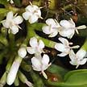
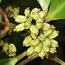
Chengam
Scyphiphora hydrophyllacea |

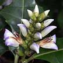
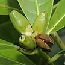
Sea holly or Jeruju
Acanthus sp. |
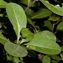
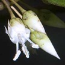
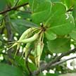
Kacang-kacoang
Aegiceras corniculatum |
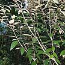
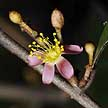
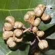
Dungun air
Brownlowia tersa |
|
| Shrub
(2-3m). Leaves spoon-shaped, leathery (3-5cm), shiny green. Flowers
white, in dense clusters (3-4cm). Fruit oblong with 6-8 ridges, green
ripening to white. Sometimes seen in our mangroves and on our shores. |
Sprawling
shrub (50-80cm) to small tree (2m tall). Leaves (10-16cm) waxy, stiff,
dark green and may be lobed and spiny, or oval and lack spines. Flowers
in an upright spike. Fruit a capsule (2-3cm). Commonly seen in the
back mangroves on many shores. Some species are Vulnerable. |
Shrub
or low tree (6m tall). Leaves (4-8cm) thick, leathery glossy. Flowers
white or pale pink in a ball-like cluster. Fruit long (5-8cm) cylindrical
with pointed tip, usually curved. Rare. It is Endangered. |
Shrub
(1.5-2 m). Leaves narrow and oval, thin or leathery (8-12cm). Glossy
upperside, grey-green silvery underside, leaves spirally alternate.
Flowers tiny (less than 1cm) pink petals with a yellow base, slightly
longer than the calyx. Fruits tiny (1.5cm) a woody capsule or nut.
Rare. It is Critically Endangered. |
Shrub
to tree 7m. Leaves narrow oblong or elliptic (7-12cm), shiny green,
opposite. Flowers (1.5-2cm long) white. Propagule slender (25-40cm
long) and tapered at each end, capped by the persistent sepals. Very
rare. It is Critically Endangered. |
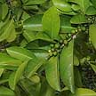
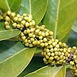
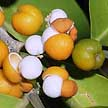
Limau
hantu
Suregada multiflora |
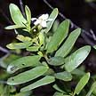
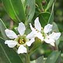
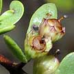
Mentigi
Pemphis acidula |
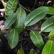
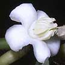
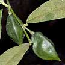
Limau
lelang
Merope angulata |
|
|
| Small
tree. Fleshy narrow leaves (5-7cm). Flowers small in clusters. Fruits
resemble small limes, ripening orange, splitting to reveal white pulp.
Planted at Changi. |
Small
tree (7-10m) more usually a short bush (1-2m). Leaves small, greyish
green silky. Flowers small with six delicate white petals. Fruit a
capsule with many small seeds. Rare. |
Shrub
(3m) or scrambling plant. Leaves (7-16cm) leathery, arranged alternately
with lime-like scent when crushed. Stout spines. Flowers small white
petals. Fruits (2.5-4cm) yellow, resembling a lemon with three flat
sides. Rare. |
Shrub
(2-4m) or short tree. Leaves (4-5cm) leathery, arranged opposite.
Inflorescence of dense fluffy white flowers (1cm). Fruits (1cm) oblong,
white. Sometimes seen on wild in coastal forests, also cultivated. |
|